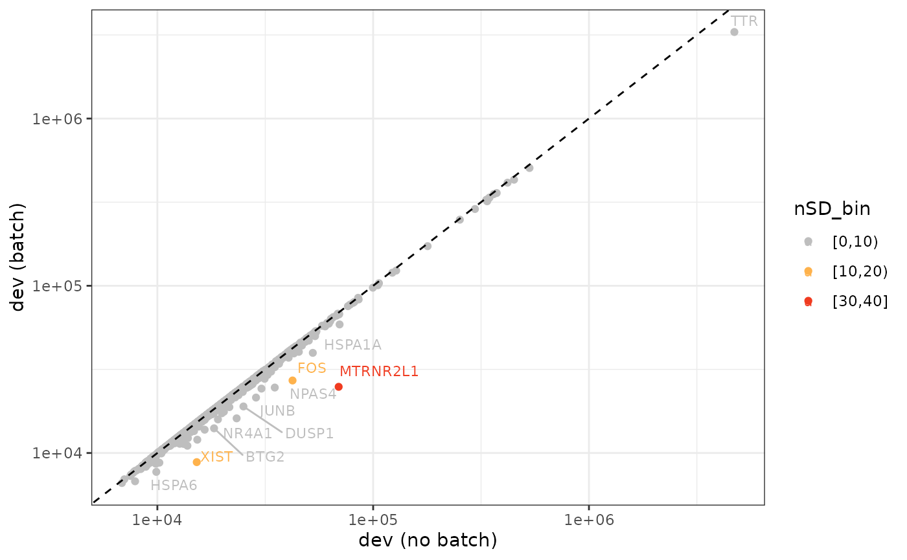
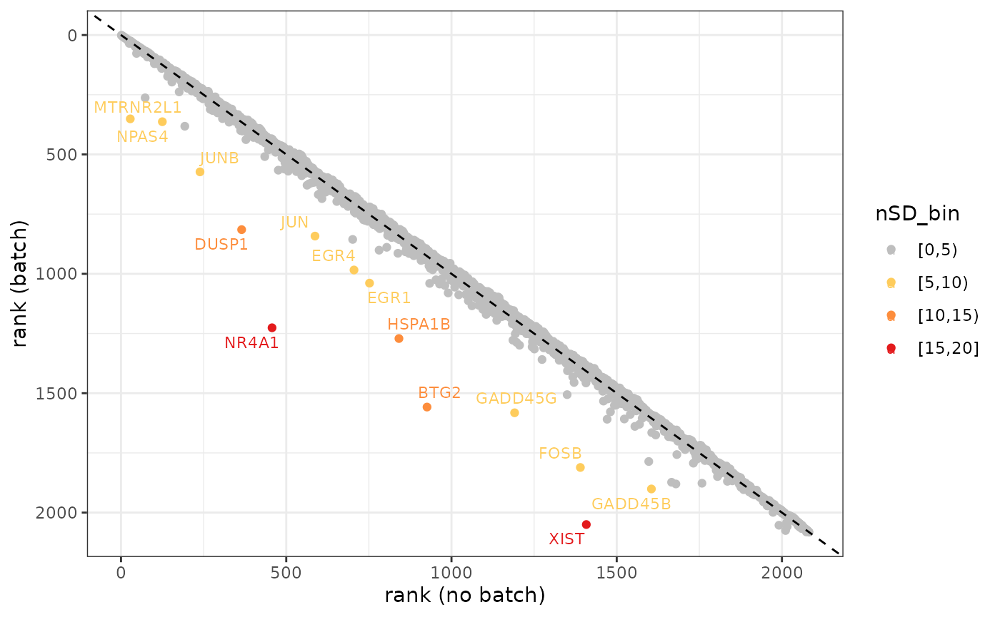
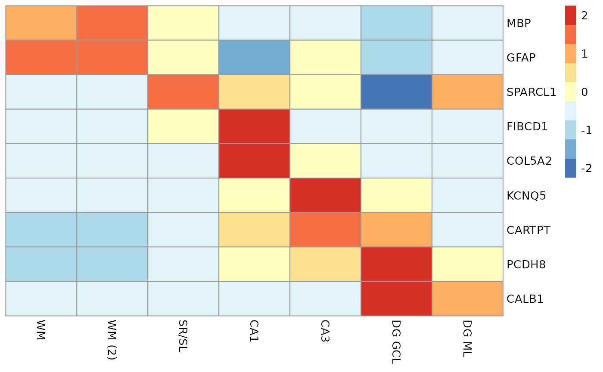
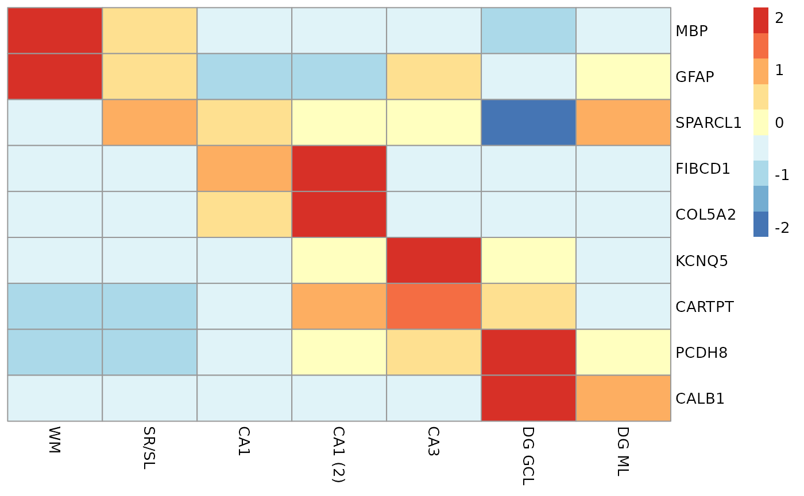
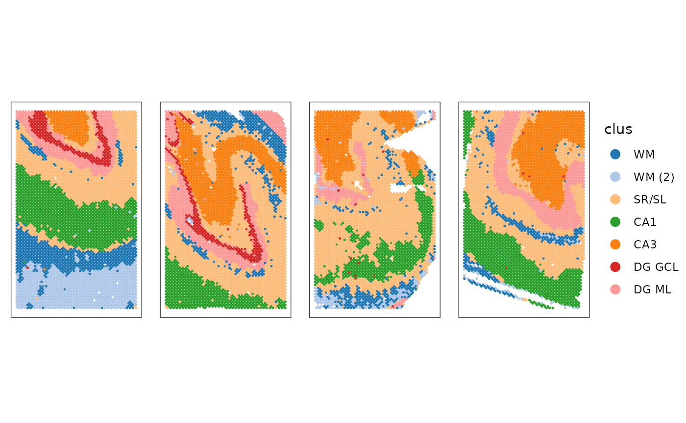
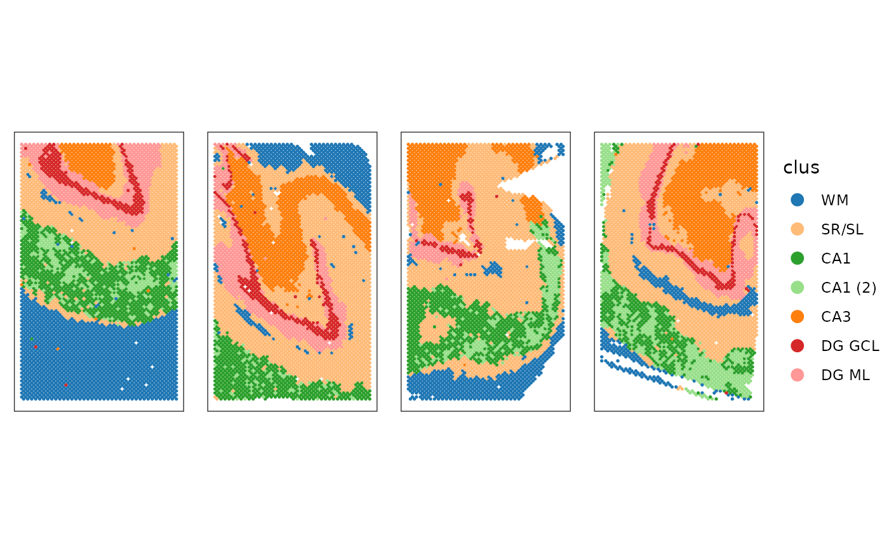

Find Bias Features - Spatial Transcriptomics Data
Christine Hou
Department of Biostatistics, Johns Hopkins Universitychris2018hou@gmail.com
Jacqui Thompson
Department of Biostatistics, Johns Hopkins Universityjthom338@jh.edu
Stephanie Hicks
Department of Biostatistics, Johns Hopkins Universityshicks19@jhu.edu Source:
vignettes/tutorial_spe.Rmd
tutorial_spe.RmdIntroduction
BiasDetect package was developed on an unrelated DLPFC
dataset available through the spatialLIBD
package. We first chose binomial deviance model from scry
as the feature selection method that can incorporate a batch variable
into the model. Next, we compared the per-gene ranks and dispersion
values when the model was run with and without a batch effect. Our
data-driven thresholding approach is using the cutoffs based on the
number of standard deviance (nSD) of deviance and rank difference
metrics. Based on self-selected nSD cutoffs, the genes identified as
biased can be filtered out.
The methodology details can be found in Find Bias Feature written by Jacqui Thompson, and the documentation related codes can be found on GitHub.
Tutorial
Installation
BiasDetect is a R package. Install development version
from GitHub:
remotes::install("christinehou11/BiasDetect")Setup
Install BiasDetect
if (!requireNamespace("BiocManager", quietly = TRUE)) {
install.packages("BiocManager")
}
BiocManager::install("BiasDetect")
## Check that you have a valid Bioconductor installation
BiocManager::valid()Load required packages
Data
The dataset in this tutorial section is from spatialHPC.
We used nnSVG to
filter out 2082 statistically significant spatially variable genes
(SVGs) and saved in a new spe object. The filtered new
spe object used for the vignettes is here.
Bias Genes Identification
The data frame created from featureSelect() function
includes nSD_dev and nSD_rank, and we can use
biasDetect() function to identify the bias genes based on
the self-selected nSD integer thresholds for deviance and
rank respectively. The default threshold is 5 for deviance and 5 for
rank.
batch_df <- featureSelect(spe_svgs, batch_effect = "sample_id", VGs = SVGs)
#> Step 1: Running feature selection without batch...
#> Step 2: Running feature selection with batch...
#> Step 3: Calculating deviance and rank difference...
dim(batch_df)
#> [1] 2082 10
head(batch_df)
#> gene gene_name dev_default rank_default dev_batch rank_batch
#> 1 ENSG00000002330 BAD 15830.43 1310 15785.12 1289
#> 2 ENSG00000002586 CD99 18837.21 865 18616.10 858
#> 3 ENSG00000004059 ARF5 15033.32 1443 14985.57 1417
#> 4 ENSG00000004660 CAMKK1 14586.54 1506 14479.27 1487
#> 5 ENSG00000004779 NDUFAB1 19859.78 756 19469.72 764
#> 6 ENSG00000005022 SLC25A5 16842.03 1150 16739.61 1131
#> d_diff nSD_dev r_diff nSD_rank
#> 1 0.002870288 -0.31052071 -21 -0.4914075
#> 2 0.011877487 -0.13869673 -7 -0.1638025
#> 3 0.003186151 -0.30449522 -26 -0.6084093
#> 4 0.007408683 -0.22394495 -19 -0.4446068
#> 5 0.020034113 0.01690146 8 0.1872029
#> 6 0.006118529 -0.24855631 -19 -0.4446068What’s more, biasDetect function allows to return the
biased genes either in data frame format or in plots. The default format
is in data frame.
bias <- biasDetect(batch_df = batch_df, nSD_dev = 10, nSD_rank = 5)
bias
#> GADD45B DUSP1 EGR1 NR4A1
#> "ENSG00000099860" "ENSG00000120129" "ENSG00000120738" "ENSG00000123358"
#> FOSB GADD45G EGR4 BTG2
#> "ENSG00000125740" "ENSG00000130222" "ENSG00000135625" "ENSG00000159388"
#> FOS JUNB NPAS4 JUN
#> "ENSG00000170345" "ENSG00000171223" "ENSG00000174576" "ENSG00000177606"
#> HSPA1B XIST MTRNR2L1
#> "ENSG00000204388" "ENSG00000229807" "ENSG00000256618"To see the plots, add visual = TRUE.
biasDetect(batch_df = batch_df, nSD_dev = 10, nSD_rank = 5, visual = TRUE)
#> $deviance
#>
#> $rank
Finally, we can obtain a new spe object by removing all
biased genes.
Clustering
We can apply PRECAST to identify clusters using K = 7. As we can see, the cluster are successfully distinguished after we remove the bias genes, which proves the practicability of our method.
path1 <- system.file("extdata","seuInt-hpc_k-7_svgs_metadata.csv", package="BiasDetect")
clusters1 <- read.csv(path1, row.names = 1)
dim(clusters1)
#> [1] 18945 5
identical(rownames(clusters1), rownames(colData(spe_svgs)))
#> [1] TRUE
spe_svgs$precast_k7 = clusters1$cluster
spe_svgs$precast_k7_ordered = factor(
spe_svgs$precast_k7, levels=c(7,2,3,1,6,5,4),
labels=c("WM","WM (2)","SR/SL","CA1","CA3","DG GCL","DG ML"))
path2 <- system.file("extdata","seuInt-hpc_k-7_svgs-no-bias_metadata.csv", package="BiasDetect")
clusters2 <- read.csv(path2, row.names = 1)
identical(rownames(clusters2), rownames(colData(spe_svgs)))
#> [1] TRUE
spe_svgs$precast_k7_nobias = clusters2$cluster
spe_svgs$precast_k7_nobias_ordered= factor(
spe_svgs$precast_k7_nobias, levels=c(1,2,7,5,6,4,3),
labels=c("WM","SR/SL","CA1","CA1 (2)","CA3","DG GCL","DG ML"))
spe_svgs <- logNormCounts(spe_svgs)
markers = c("MBP","GFAP","SPARCL1","FIBCD1","COL5A2","KCNQ5","CARTPT","PCDH8","CALB1")
plotGroupedHeatmap(spe_svgs, features = markers, swap_rownames="gene_name",
group="precast_k7_ordered",
scale=TRUE, center=TRUE,
cluster_rows=FALSE, cluster_cols=FALSE)
plotGroupedHeatmap(spe_svgs, features = markers, swap_rownames="gene_name",
group="precast_k7_nobias_ordered",
scale=TRUE, center=TRUE,
cluster_rows=FALSE, cluster_cols=FALSE)
l2 = unique(spe_svgs$sample_id)
names(l2) = l2
l2 = lapply(l2, function(x) spe_svgs[,colData(spe_svgs)$sample_id==x])
col.pal1 = c("#1f77b4FF","#aec7e8FF","#ffbb78FF","#2ca02cFF","#ff7f0eFF","#d62728FF","#ff9896FF")
col.pal2 = c("#1f77b4FF","#ffbb78FF","#2ca02cFF","#98df8aFF","#ff7f0eFF","#d62728FF","#ff9896FF")
c1 <- lapply(seq_along(l2), function(x) {
plotSpots(l2[[x]], annotate="precast_k7_ordered")+
labs(color="clus")+
scale_color_manual(values=col.pal1)+
theme(plot.title=element_text(size=8))
})
drawFigs(c1, layout.dim = c(1, 4), common.legend = TRUE, legend.position = "right", align = "h")
c2 <- lapply(seq_along(l2), function(x) {
plotSpots(l2[[x]], annotate="precast_k7_nobias_ordered")+
labs(color="clus")+
scale_color_manual(values=col.pal2)+
theme(plot.title=element_text(size=8))
})
drawFigs(c2, layout.dim = c(1, 4), common.legend = TRUE, legend.position = "right", align = "h")
Please read reference documentation for detailed codes and scripts conducting PRECAST clustering before and after removing the biased gene.
R session information
#> R version 4.4.1 (2024-06-14)
#> Platform: x86_64-pc-linux-gnu
#> Running under: Ubuntu 22.04.4 LTS
#>
#> Matrix products: default
#> BLAS: /usr/lib/x86_64-linux-gnu/openblas-pthread/libblas.so.3
#> LAPACK: /usr/lib/x86_64-linux-gnu/openblas-pthread/libopenblasp-r0.3.20.so; LAPACK version 3.10.0
#>
#> locale:
#> [1] LC_CTYPE=C.UTF-8 LC_NUMERIC=C LC_TIME=C.UTF-8 LC_COLLATE=C.UTF-8 LC_MONETARY=C.UTF-8
#> [6] LC_MESSAGES=C.UTF-8 LC_PAPER=C.UTF-8 LC_NAME=C LC_ADDRESS=C LC_TELEPHONE=C
#> [11] LC_MEASUREMENT=C.UTF-8 LC_IDENTIFICATION=C
#>
#> time zone: UTC
#> tzcode source: system (glibc)
#>
#> attached base packages:
#> [1] parallel stats4 stats graphics grDevices utils datasets methods base
#>
#> other attached packages:
#> [1] ggspavis_1.10.0 scater_1.32.1 scuttle_1.14.0 PRECAST_1.6.5
#> [5] gtools_3.9.5 ggplot2_3.5.1 SpatialExperiment_1.14.0 SingleCellExperiment_1.26.0
#> [9] SummarizedExperiment_1.34.0 Biobase_2.64.0 GenomicRanges_1.56.1 GenomeInfoDb_1.40.1
#> [13] IRanges_2.38.1 S4Vectors_0.42.1 BiocGenerics_0.50.0 MatrixGenerics_1.16.0
#> [17] matrixStats_1.4.1 BiasDetect_0.99.0 BiocStyle_2.32.1
#>
#> loaded via a namespace (and not attached):
#> [1] RcppAnnoy_0.0.22 splines_4.4.1 later_1.3.2 tibble_3.2.1
#> [5] polyclip_1.10-7 fastDummies_1.7.4 lifecycle_1.0.4 rstatix_0.7.2
#> [9] globals_0.16.3 lattice_0.22-6 MASS_7.3-60.2 backports_1.5.0
#> [13] magrittr_2.0.3 plotly_4.10.4 sass_0.4.9 rmarkdown_2.28
#> [17] jquerylib_0.1.4 yaml_2.3.10 httpuv_1.6.15 Seurat_5.1.0
#> [21] sctransform_0.4.1 ggside_0.3.1 spam_2.10-0 sp_2.1-4
#> [25] spatstat.sparse_3.1-0 reticulate_1.39.0 cowplot_1.1.3 pbapply_1.7-2
#> [29] RColorBrewer_1.1-3 abind_1.4-8 zlibbioc_1.50.0 Rtsne_0.17
#> [33] purrr_1.0.2 GenomeInfoDbData_1.2.12 ggrepel_0.9.6 scry_1.16.0
#> [37] irlba_2.3.5.1 listenv_0.9.1 spatstat.utils_3.1-0 pheatmap_1.0.12
#> [41] goftest_1.2-3 RSpectra_0.16-2 spatstat.random_3.3-1 fitdistrplus_1.2-1
#> [45] parallelly_1.38.0 DelayedMatrixStats_1.26.0 pkgdown_2.1.0 leiden_0.4.3.1
#> [49] codetools_0.2-20 DelayedArray_0.30.1 tidyselect_1.2.1 UCSC.utils_1.0.0
#> [53] farver_2.1.2 viridis_0.6.5 ScaledMatrix_1.12.0 spatstat.explore_3.3-2
#> [57] jsonlite_1.8.8 BiocNeighbors_1.22.0 progressr_0.14.0 ggridges_0.5.6
#> [61] survival_3.6-4 systemfonts_1.1.0 tools_4.4.1 ragg_1.3.3
#> [65] ica_1.0-3 Rcpp_1.0.13 glue_1.7.0 gridExtra_2.3
#> [69] SparseArray_1.4.8 xfun_0.47 ggthemes_5.1.0 dplyr_1.1.4
#> [73] withr_3.0.1 BiocManager_1.30.25 fastmap_1.2.0 fansi_1.0.6
#> [77] digest_0.6.37 rsvd_1.0.5 R6_2.5.1 mime_0.12
#> [81] textshaping_0.4.0 colorspace_2.1-1 scattermore_1.2 tensor_1.5
#> [85] spatstat.data_3.1-2 utf8_1.2.4 tidyr_1.3.1 generics_0.1.3
#> [89] data.table_1.16.0 httr_1.4.7 htmlwidgets_1.6.4 S4Arrays_1.4.1
#> [93] uwot_0.2.2 pkgconfig_2.0.3 gtable_0.3.5 lmtest_0.9-40
#> [97] XVector_0.44.0 htmltools_0.5.8.1 carData_3.0-5 dotCall64_1.1-1
#> [101] bookdown_0.40 SeuratObject_5.0.2 scales_1.3.0 png_0.1-8
#> [105] spatstat.univar_3.0-1 knitr_1.48 reshape2_1.4.4 rjson_0.2.23
#> [109] nlme_3.1-164 cachem_1.1.0 zoo_1.8-12 stringr_1.5.1
#> [113] KernSmooth_2.23-24 vipor_0.4.7 miniUI_0.1.1.1 GiRaF_1.0.1
#> [117] desc_1.4.3 pillar_1.9.0 grid_4.4.1 vctrs_0.6.5
#> [121] RANN_2.6.2 ggpubr_0.6.0 promises_1.3.0 car_3.1-2
#> [125] BiocSingular_1.20.0 DR.SC_3.4 beachmat_2.20.0 xtable_1.8-4
#> [129] cluster_2.1.6 beeswarm_0.4.0 evaluate_0.24.0 magick_2.8.4
#> [133] cli_3.6.3 compiler_4.4.1 rlang_1.1.4 crayon_1.5.3
#> [137] ggsignif_0.6.4 future.apply_1.11.2 labeling_0.4.3 mclust_6.1.1
#> [141] ggbeeswarm_0.7.2 plyr_1.8.9 fs_1.6.4 stringi_1.8.4
#> [145] viridisLite_0.4.2 deldir_2.0-4 BiocParallel_1.38.0 munsell_0.5.1
#> [149] lazyeval_0.2.2 spatstat.geom_3.3-2 CompQuadForm_1.4.3 Matrix_1.7-0
#> [153] RcppHNSW_0.6.0 patchwork_1.3.0 sparseMatrixStats_1.16.0 future_1.34.0
#> [157] shiny_1.9.1 highr_0.11 ROCR_1.0-11 broom_1.0.6
#> [161] igraph_2.0.3 bslib_0.8.0